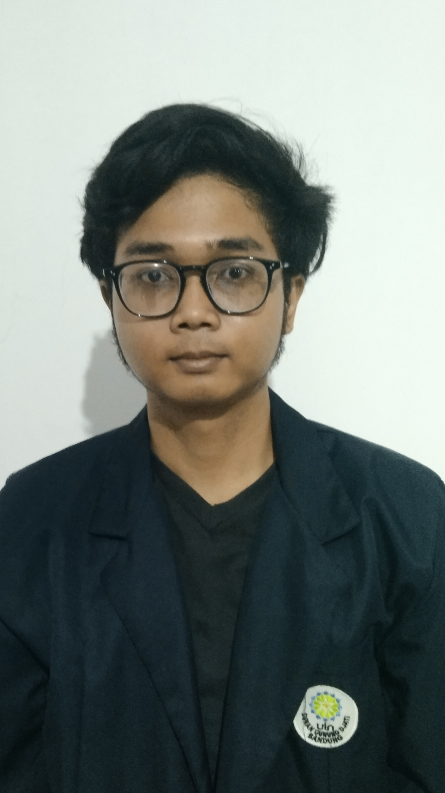

Personnel Dossier

General Information
Operator ARYA FABIO ISMAIL (NIM: 1247050080) saat ini menempuh pendidikan S1 Teknik Informatika di UIN Sunan Gunung Djati Bandung. Memiliki keahlian teknis dalam konfigurasi perangkat jaringan, C++, administrasi logistik, dan pengelolaan sistem acara.
Professional Experience
- IT Support (Intern) - PT. Makmur Mandiri Utama (3 Bulan).
- Warehouse Staff - PT. INTI (Jun 2023 - Jan 2024). Bertanggung jawab atas pengelolaan barang, rekam inventaris, dan kelancaran operasi logistik.
Recent Milestones & Leadership
- President of Mosque Youth Organization (IRMA) (Sep 2022 - Jan 2024).
- Penghargaan Best Business Pitching Award - IBSC UNJ 2025.
- Penghargaan Top 3 Best Graduate - SMK Handayani Banjaran (2024).
Current Directives (Semester 5 - Ganjil)
Log operasional mata kuliah (Total 23 SKS) yang terdaftar pada sistem utama:
| Mata Kuliah | Kelas / SKS | Jadwal & Ruang | Instruktur (Dosen) |
|---|---|---|---|
| Jaringan Komputer | A / 3 SKS | Rabu 09:30-12:00 (R.4.11) | Cecep Nurul Alam M.T. |
| Pengembangan Aplikasi Web | A / 3 SKS | Kamis 15:30-18:00 (R.4.01) | Muhammad Deden Firdaus ST, M.Kom |
| Interaksi Manusia dan Komputer | A / 3 SKS | Rabu 07:00-09:30 (R.4.01) | Dr. Cepy Slamet S.T., M.Kom. |
| Manajemen Proyek Perangkat Lunak | A / 3 SKS | Senin 07:00-09:30 (R.4.01) | Agung Wahana S.E., M.T. |
| Pengembangan Aplikasi Mobile | A / 3 SKS | Kamis 09:30-12:00 (R.4.01) | H. Aldy Rialdy Atmadja M.T |
| Manajemen Basis Data | A / 3 SKS | Senin 09:30-12:00 (R.4.09) | Wildan Budiawan Zulfikar S.T., M.Kom. |
| Intelegensia Buatan | A / 3 SKS | Selasa 15:30-18:00 (R.4.10) | Jumadi ST., M.Cs. |
| Sosio-Informatika dan Profesionalisme | D / 2 SKS | Rabu 12:40-14:20 (R.4.10) | Dr. Yana Aditia Gerhana ST., M.Kom. |
External Archives & Comms
Silakan gunakan saluran di bawah ini untuk menghubungi atau meninjau data historis.
- Email Utama: Aristria91@gmail.com
- Jaringan Profesional: LinkedIn Profile